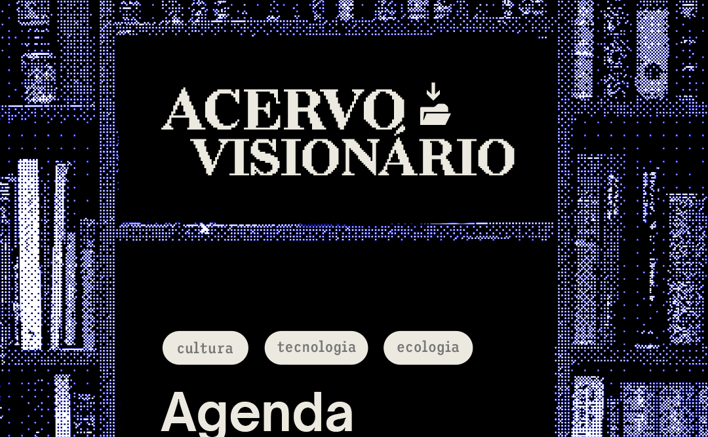
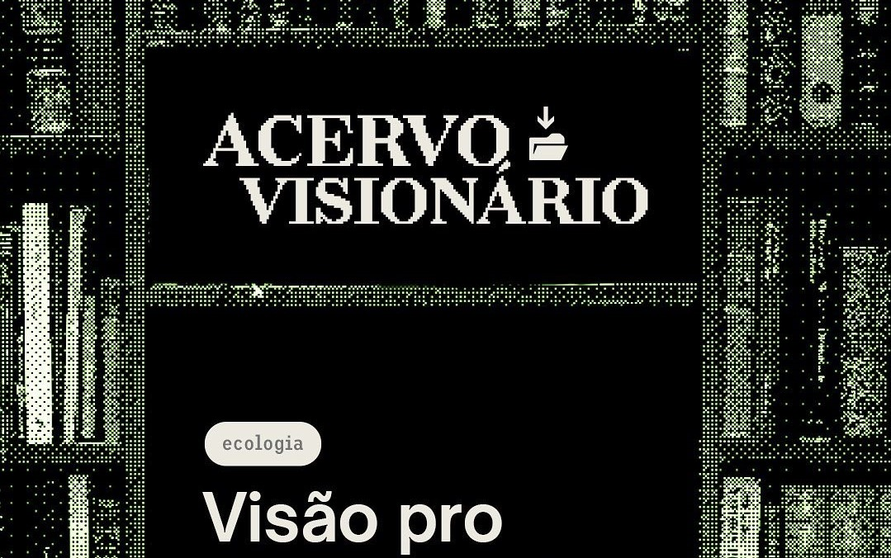
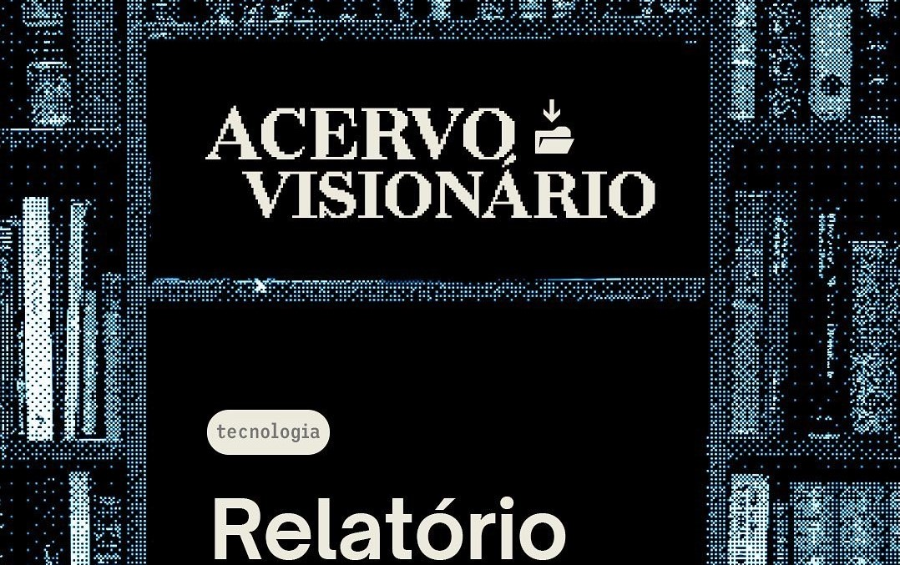

Somos um laboratório de inovação cívica, organizamos redes de cooperação e trabalhamos com tecnologias sociais, digitais e verdes na Baixada Fluminense
ACERVO VISIONÁRIO
Recentes

Maio/01
Cultura
Tecnologia
Ecologia
Acervo Visionário: Agenda Queimados
Dentro dos principais temas de interesse do munícipio criamos uma Agenda que
oferecesse propostas para a construção de uma nova Queimados. A Visão somou
nessa
construção numa parceria com o Golfinhos da Baixada, Pedala Queimados e Ampara.

Maio/10
Ecologia
Acervo Visionário: Visão pro Saneamento
Essa publicação que foi criada em colaboração com a Casa Fluminense, Data_Labe e
Ressuscita São Gonçalo, onde reunimos informações importantes para o
entendimento
das condições do saneamento nas regiões periféricas do Rio de Janeiro.

Abril/26
Tecnologia
Acervo Visionário: Relatório XBOOM
Dessa vez o Acervo Visionário apresenta um pouco do que é o XBOOM e o relatório
gerado através da análise de dados sobre o projeto que junta programação, edição
de
som, roteiro, artes e game design para jovens que desejam ingressar na área.
TRABALHOS
Atuamos nos últimos 3 anos em projetos de desenvolvimento local que impactaram a vida de milhares de pessoas da Baixada Fluminense. Fomos autores da Agenda Queimados 2030, editores e desenvolvedores da identidade visual do Plano de Cultura de Guapimirim, publicamos também a revista "Visão pro saneamento do Rio +30".
Veja mais >